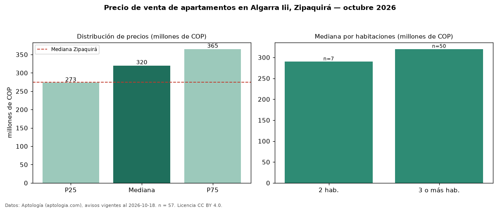

Precio de venta de apartamentos en Algarra Iii, Zipaquirá — octubre 2026
En Algarra Iii, Zipaquirá, la mediana de precio de venta de apartamentos es COP 320 millones, según 57 avisos vigentes. Eso es 16 % por encima de la mediana de Zipaquirá para apartamentos (COP 275 millones). Por metro cuadrado, la mediana es COP 4,80 millones/m² (n = 57 avisos con área), 10 % por encima de Zipaquirá (COP 4,37 millones/m²). El área mediana anunciada es 62 m². El segmento con más oferta es el de 3 o más habitaciones (50 avisos, mediana COP 320 millones); pasar de 2 habitaciones a 3 o más habitaciones cambia la mediana +10 %. La administración mediana declarada es COP 197.500 al mes (n = 48). El estrato más frecuente es 4 (80 % de los avisos con estrato). La mitad central de los avisos va de COP 273 millones a COP 365 millones (razón 1,3), una dispersión baja. Datos: Aptología (aptologia.com), CC BY 4.0 — https://www.aptologia.com/venta/zipaquira/algarra-iii. Archivos: PDF, CSV con las cifras y gráfica PNG.

| Avisos únicos | 57 |
|---|---|
| Percentil 25 | COP 273.000.000 |
| Mediana | COP 319.999.999 |
| Percentil 75 | COP 365.000.000 |
| Mediana por m² | COP 4.802.631 |
Fuente: avisos vigentes de portales inmobiliarios recopilados por Aptología, deduplicados (mínimo 30 avisos únicos por celda). Precios pedidos, no cerrados. Fecha: 2026-10-18.